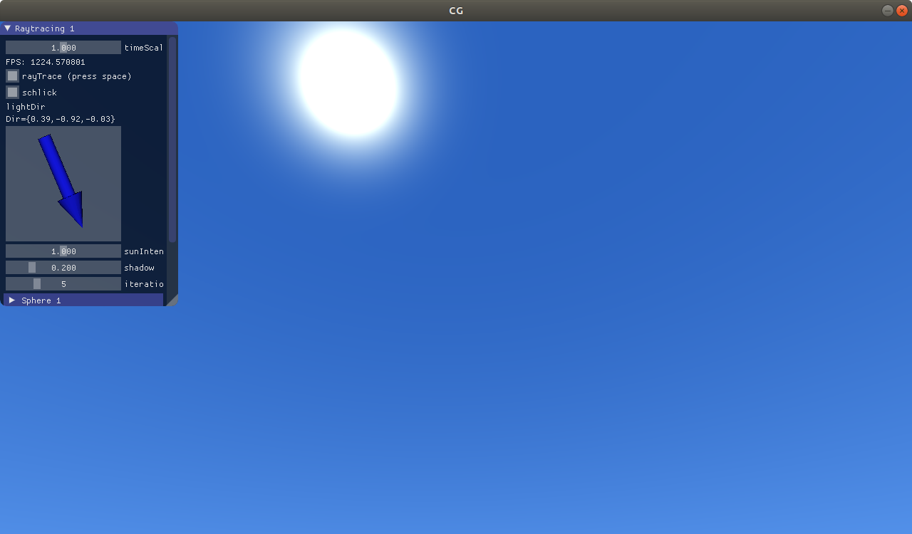
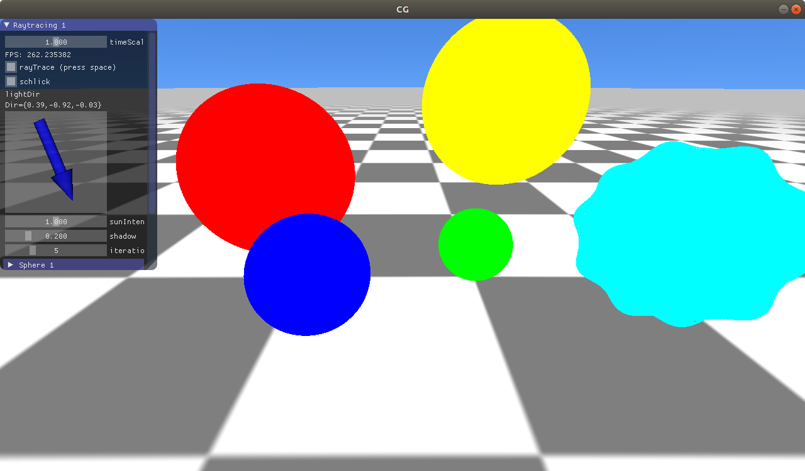
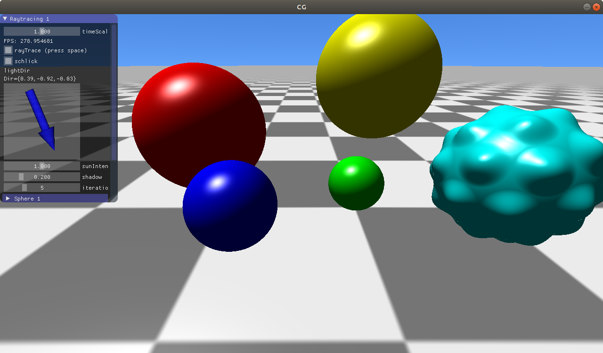
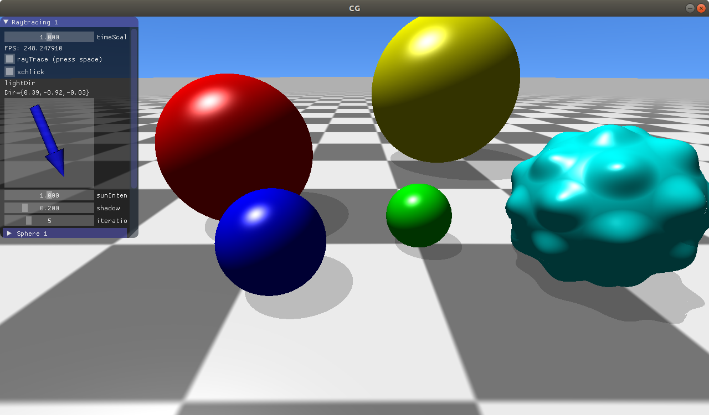

Number of pixels:
Recursion depth:
Diffuse samples:
Show rays:
In this subtask you should set up the primary rays to start backward ray tracing.
A primary ray starts at the origin of the camera and shoots through a single pixel of the virtual sensor.
In the Basic1.Render() function we iterate over all pixels of the virtual sensor.
Follow the comments in the source code to set up one ray for each pixel and call the traceRay(...) function to start the ray tracing.
Once you are done, you can change the number of pixels in the interactive canvas using the slider and have a look at the rays emanating from the camera. You should see the primary rays as gray dashed lines that do not yet interact with the scene. For this and the next subtask, the first testcase uses four pixels, the second one eight.
| Your code | Solution | Difference |
|---|---|---|
| Your code | Solution | Difference |
|---|---|---|
In the previous subtask you called the traceRay(...) function.
This function intersects the given ray with the scene and computes the color at this point.
Your task is to implement the intersection function that intersects a ray with a line (Line.intersect).
If you have implemented the previously mentioned functions you should now see the intersection points in addition to the primary rays.
For intersections with diffuse objects (including the scene border), a ray to the light source is drawn, if it is not occluded.
| Your code | Solution | Difference |
|---|---|---|
| Your code | Solution | Difference |
|---|---|---|
Until now, we have not considered indirect light.
To do so, we have to shoot secondary rays and call the traceRay(...) function recursively.
Your task is to implement the Ray.reflect function.
Given an intersection point, we consider two cases: a perfect mirror and perfect diffuse material.
A mirror perfectly reflects an incoming ray. Diffuse material reflects an incoming ray in a seeded random direction of the hemisphere around the normal.
Follow the comments in the source code to implement this function. Note that the sloped boxes are always perfect mirrors in the testcases.
If you have implemented the function you can use the recursion depth slider to adjust the recursion depth
and the diffuse samples slider to adjust the number of random reflection samples of a diffuse reflection in the interactive canvas.
| Your code | Solution | Difference |
|---|---|---|
| Your code | Solution | Difference |
|---|---|---|
| Your code | Solution | Difference |
|---|---|---|
| Your code | Solution | Difference |
|---|---|---|
In this exercise you will learn how to create an image by raytracing a three-dimensional scene. The image will contain diffuse illumination and shadows.
You can switch between rasterization and raytracing by pressing space.
The rasterized result contains a sphere instead of the spikeball present in the raytraced scene,
and utilizes a simpler illumination model.
Therefore, the rasterized result does not serve as a reference solution,
but you can check whether your intersection tests are correct by comparing the sphere positions and sizes between rasterized and raytraced output.
For every pixel, one ray is cast into the scene. This first ray is called the primary ray.
Compute the origin and direction of the primary ray in the main function of the fragment shader in rt.glsl.
projView matrix.cameraPos. After this task you should be able to see the sky and - once you have turned the camera around - also the sun.

Compute the ray-plane intersection in the function intersectRayPlane in intersection_plane_sphere.glsl
by solving the following equation for $p$ (the intersection point) and $t$ (the distance of the intersection point from the ray origin):
\[ dt + o = p \]
\[ t > 0 \]
\[ p \cdot n = k \]
The ray is given by the origin $o$ and the direction $d$.
The plane is given by the normal $n$ and the distance $k$ to the origin.
After this subtask and also the following one (c), you will not be able to see any change in the output. The output will only change once subtask d is complete!
Compute the ray-sphere intersection in the function intersectRaySphere in intersection_plane_sphere.glsl by solving the following equation for $p$ and $t$:
\[ dt + o = p \]
\[ t > 0 \]
\[ |p - c|^2 = r^2 \]
The sphere is defined by the center $c$ and radius $r$.
When there are two solutions for the equation, choose the solution that is closer to the ray origin.
Use the following rule for the algebraic transformations:
\[ |a + b|^2 = |a|^2 + 2(a \cdot b) + |b|^2 \]
The function intersectScene in rt.glsl computes the closest intersection point of a ray with the complete scene. The returned integer is the ID of the intersected object. If no intersection is found, -1 is returned.
Call the intersection functions for all spheres, the plane, and the spikey ball. Keep track of the closest intersection point. Store the IntersectionResult object for the closest intersection in the parameter out inter.
If you have implemented everything correctly so far the image should look like this:

Compute a Phong shading with diffuse, specular, and ambient term when an object is hit.
The light source is a white directional light coming from the direction lightDir.
The surface normal is stored in the intersection struct and the object color is stored in the material.

We can add hard shadows to the scene in the following way: If the primary ray has hit an object,
shoot a "shadow ray" towards the light source and check if there is an object in between.
The diffuse and specular illumination from the previous step is now only added when nothing was hit (in our case: objectId = -1).
The uniform shadowFactor interpolates completely black shadows (shadowFactor=1) to no shadows (shadowFactor=0).
Implementation hints for the shadow ray:
